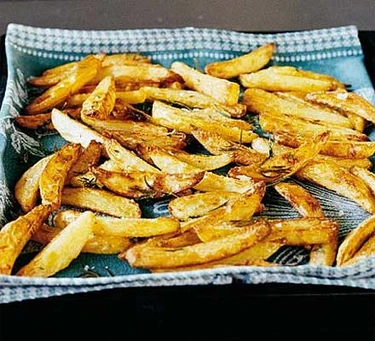

Ingredients
Step 1:
Heat oven to its highest setting, ideally 250C/fan 230C/gas 9. Cut each potato into 1cm-wide slices, then into 1cm-thick sticks. Blanch in a large pan of boiling water for 3 mins, then drain well.
Step 2:
Shake the potatoes out onto a roasting pan, drizzle with oil, ensuring each chip is evenly coated, then season well. Bake for about 15-20 mins, turning the potatoes at least twice, until golden brown and crisp.